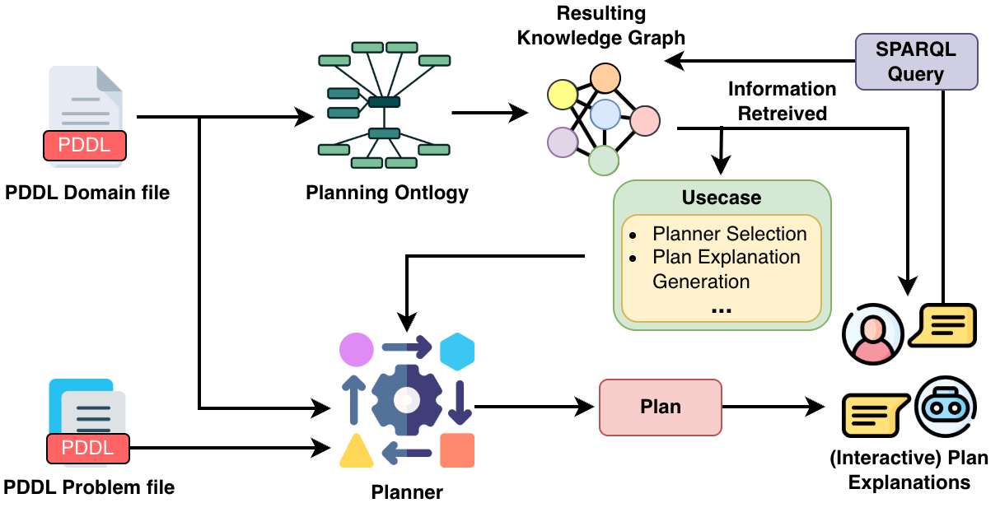

Single-Agent PO · Workflow
A Planning Workflow with the Ontology
The ontology turns PDDL into a queryable knowledge graph; SPARQL then powers downstream use cases.

PDDL → Ontology → Knowledge Graph
SPARQL retrieves information
Use cases: planner selection & explanation